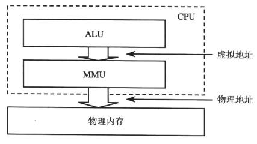
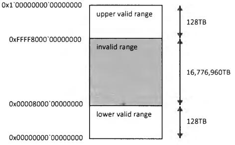
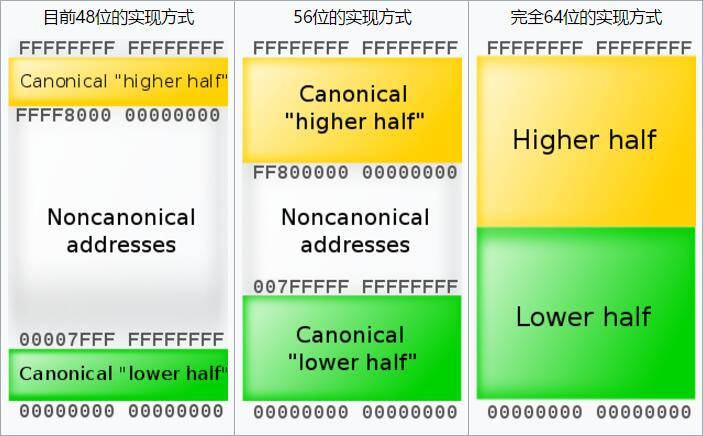

一个操作系统要称为现代意义上的操作系统就必须提供对内核的保护, 对不同用户程序之间的隔离, 并允许软件的载入位置浮动.
而满足这些基本要求的手段, 就是采用基于页面映射的 “虚拟内存” 机制, 或者说提供 “分页内存管理”.
在硬件上, 这是由 CPU 芯片的 “存储管理单元” MMU 支持的. 而在软件商, 则由操作系统内核中的内存管理模块实现.
采用分页内存管理时, 程序中所使用的内存地址, 即 CPU 中的运算单元 ALU 所发出的都是 “虚拟地址”, “虚拟地址” 是不能直接用来访问物理内存的, 需要 MMU 将其 “映射” 到某个物理页面上转换成 “物理地址” 才能访问.

这种映射是以页面为单位的,而不是以单个地址为单位的. 此外, MMU 还担负着检查访问权限的任务, 可以根据 CPU 的当前状态和访问形式决定是否允许访问.
为什么要有这样的映射呢?
- 每个进程的虚拟地址的范围是相同的, 但是实际映射的确是物理内存中不同的部位, 这样就实现了软件载入(物理)地址的浮动.
- 不同进程的虚拟地址被映射到物理内存中不同的页面集合, 每个进程都有自己的映射, 互相之间没有交集, 解决了进程间隔离的问题.
- 把 CPU 的运行状态分成 “用户态” 和 “内核态”, 其虚拟地址范围也分成两个部分, 一部分属于内核, 另一部分属于用户程序. 并使 CPU 运行于用户态时就没有访问内核部分的权限, 这就解决了保护内核的问题.
MMU 怎么知道哪一个虚拟页面应当被映射到哪一个物理页面呢? 为此就需要有个 “页面映射表”.
页面映射表实际上是个以虚拟内存页面号为下标的数组, 数组中的元素称为页面映射表项, 表项的内容决定了相应的虚拟内存页面是否有映射, 映射到哪一个物理页面, 以及该物理页面的保护模式 (权限要求和所允许的访问模式).
每个进程都有自己的页面映射表. CPU 在执行哪一个进程的程序, 就使用哪一个进程的页面映射表. CPU 有个专门的控制寄存器 CR3, 这个寄存器总是指向当前进程的页面映射表 (使用物理地址).
CPU 根据实际需要把当前用到的页面映射表项告诉混存在内部的 TLB (地址转换便查缓冲区) 中, 是 CPU 内部一块专用的, 特殊的 (只读) 高速缓存. 每当需要使用一个页面映射表项时, MMU 首先在 TLB 中寻找, 找到就不需要访问物理内存了, 找不到才从物理内存装入所需的表项.
在 CPU 的页面映射机制中, MMU 的作用是:
- 根据虚拟内存地址计算出该地址所属的页面;
- 再根据页面映射表的起始地址计算出该页面映射表项所在的物理地址;
- 根据物理地址在高速缓存的 TLB 中寻找该表象的内容;
- 如果该表项不在 TLB 中, 就从内存将其内容装载到 TLB 中;
- 检查该表项的 PA_PRESENT 标志位, 如果为1就表示映射的目标为某个物理页面, 因而可以访问这个页面, 但是需要进一步检查是否具有所要求的访问权限, 权限不足就会产生一次页面异常.
- 如果 PA_PRESENT 标志位为0, 则说明该虚拟内存页面的映像不在内存中, 当前指令因此失败, CPU 为此产生一次页面异常, 此时响应的异常处理程序采取响应措施:
- 如果整个页面映射表象为 0, 就说明该虚拟内存页面尚无映射, 对策是检查该虚拟内存页面是否落在已分配使用的区间, 如果是就为其分配物理页面并建立映射,然后重新执行失败的指令; 如果不是就属于越界访问, 应该引起更高层次的出错处理, 直至终止当前进程的运行.
- 如果整个页面映射表项非 0, 就说明虚拟内存页面的映像存在某个页面倒换文件之中, 对策是为其分配物理页面, 从页面倒换文件读入该页面的映像, 并将该页面映射表项修改为指向此物理页面, 然后重新执行失败的指令.
不过系统的分页内存管理实际上是段式内存管理机制基础之上的分页内存管理, 即二者结合.
机器指令中所用的地址其实是以 “段 + 偏移” 的形式给定 “逻辑地址”, 每个段都有一个 64 位的段描述符块, 里面说明的段的起点, 长度, 访问权限的要求等信息. 而段寄存器的内容则为 “段选择项”,
程序实际用于数据存储的内存区间可以分为三类:
- 全局数据所占用的空间, 这是在编译/链接的时候就静态的分配好的,并于整个可执行程序共存亡. 其分配和释放都是不可见的.
- 局部数据所占用的空间, 一般是在调用一个函数或分配局部变量的时候, 自动从栈上动态分配的, vu你在于这个函数的调用框架之中, 其寿命取决于 CPU 运行于这个函数中的时间. 这部分空间的分配和释放也是不可见的.
- 通过 malloc 一类的函数动态分配的堆缓冲区, 所占用的空间一直会存在到通过 free 一类的函数加以释放, 或者程序退出运行. 其空间的分配和释放是可见的, 运行中的程序完全掌握主动, 也承担责任.
分页
处理器对虚拟地址的限制
一个 64 位的 CPU 可以寻址 2^64 字节的内存, 这是一个巨大的地址空间, 远超系统所需要的.
由于虚拟地址必须被翻译, 因此内存管理单元必须处理每个地址位, 因此其复杂性随地址大小而增加.
因此, 当前的 x64 处理器实际上将可用位数限制为 48 位, 但是有个巧妙的方案.
简单的不允许使用位 48-63 将导致虚拟内存地址限制在 256TB 以下, 这将使操作系统设计复杂化.
例如在 32 位 Windows 中, 完整的 32 位虚拟地址可用, 系统代码和数据放置在虚拟地址空间的上半部分, 即高于 2GB, 从而在应用程序和系统代码之间有了清晰的分界. 如果地址限制在 256TB, 远远低于 8EB 一半的大小, 那么在 x64 中是不可能的.
所以高 16 位被用作符号扩展 (任何虚拟地址的48位至63位必须与47位一致)
这意味着我们有两个有效的地址范围:
0 - 0x7FFF'FFFFFFFF47~63 位都是00xFFFF8000'00000000 - FFFFFFFF'FFFFFFFF47~63 位都是 1


x64代码中使用的所有地址必须是规范的. 尝试使用非规范地址会导致页面错误异常.
页面翻译概述
处理器使用内存中的一组表来确定与虚拟内存对应的物理地址.
在长模式下, 可提供 4KB, 2MB 和 1GB 字节物理页大小.
在传统模式下, 可提供 4KB, 2MB 和 4MB 的大小.
页面翻译选项
有四个控制寄存器位来控制页面翻译选项:
CR0.PGCR0[bit31], 页面翻译启用CR4.PAECR4[bit5], 物理地址扩展, 置1可将虚拟地址转换为长达52位的物理地址. 激活长时间模式前必须启用PAECR4.PSECR4[bit4], 页面大小扩展, 置1可以是操作系统在页面翻译过程中使用 4MB 物理页面. 页面大小的选择是在PDE的基础上进行的.
物理页面的大小的选择取决于CR4.PSE和CR4.PAE的值,具体如图. (处于长模式时, CR4.PSE 的值将被忽略, 因为 PAE 必须被启用)EFER.LMA长模式激活PDE.PSPDE[bit7], 置1时, 使用大的物理页面(大小由 PAE 和 PSE 决定), 并且 PDE 成为翻译层次结构的最低级别.PDPE.PSPDPE[bit7], 置1时, 使用 1GB 的物理页面, 并且 PDPE 成为翻译层次结构的最低级别.
不是所有模式都可以使用这些选项, 表总结了每种模式下可用的分页支持选项
访问无效地址
引用无效地址都会产生页面错误异常, 中断帧被推送到堆栈上, 保存的rip指向尝试内存引用的指令. 这个特殊的异常还会使用附加信息推送错误代码, 例如: 读取, 写入或指令提取.
此外, CR2 寄存器设置为代码尝试访问的地址.
传统模式页面翻译 (x86)
长模式页面翻译 (x64)
长模式页面翻译需要使用页面地址扩展 (CR4.PAE). 在启用 PAE 之前激活长模式会导致通用保护异常 (#GP) 发生.
64位寻址模式 (长模式), 是物理地址扩展 (PAE) 的超集; 因此不同于 x86 体系结构, 每级页表寻址长度变成 9 位, 由于在 x64 体系结构中, 普通页大小仍为 4KB, 然而数据却表示 64 位长, 因此一个 4KB 页在 x64 体系结构下只能包含 512 项内容, 所以为了保证页对齐和以页为单位的页表内容换入换出, 在 x64 下每级页表寻址部分长度定位 9 位.
为了正确翻译 x64 的线性地址, 其页表也从 x86 的 2 级变成了 4 级, 翻译过程如图所示, 在 x64 体系结构中, 每级页表包含 512 项 (2^9) 下级目录的指针, 该指针称为页表项, 描述了存储下级
- CR3 寄存器存储第一级表的物理地址, 称为 PML4 (Page Map Level4, 页面映射级别4). PML4 的大小为 4KB, 包含 512 个 PML4E (Page Map Level4 Entry), 每个 PML4E 占8 字节. 随后看到的结构都是一样的.
- 将虚拟地址的第 39~47 位用作 PML4 的索引, 用来选择 PML4E. 由于 PML4E 是 8 个字节长, 因此表的索引要 * 8
- 得到的 PML4E 存储下一级表的物理地址, 称为 PDPT (Page Directory Pointer Table, 页面目录指针表), 具有与 PML4 相同的结构
- 虚拟地址的 30~38 位用于选择 PDPTE (Page Directory Pointer Table Entry), 存储着称为 PD (Page Directory, 页目录) 的下一级表的物理地址.
- 虚拟地址的 21~29 位用于选择 PDE (Page Directory Entry), 它具有最后一级表的物理地址, PT (Page Table, 页表)
- 虚拟地址的 12~20 位用于选择存储另一个物理地址的 PTE (Page Table Entry), 这将是计算最终物理地址的基址.
- 虚拟地址的 0~11 位是最终物理地址的偏移. 根据上一步得到的物理地址基址+偏移得到最终的物理地址.
翻译虚拟地址的基本步骤就是上面这样, 不过我们要先看一下 CR3 和 各表项的结构才知道如何正确的翻译
内核对用户空间的管理
每个进程都有自己的用户空间, 其 “进程控制块” EPROCESS 中有个指针 VadRoot, 指向代表这个用户空间的数据结构.
先看一下涉及到的几个数据结构:
|
|
VAD 全称 Virtual Address Descriptor ( 虚拟地址描述符 ), 在 Windows 的进程空间都是通过一个对象来描述整个地址空间, 保留或者提交的虚拟内存, 然而这个对象就是VAD对象, 也就是说你在某个进程分配内存(VirtualAlloc),
释放内存(VirtualFree)的时候, 其实真正变动的都在这里, 而且此对象是一个二叉树, 而 VAD便是此树的根, 而每一个 nt!_RTL_BALANCED_NODE 中便是一段虚拟内存描述信息.
比如说 0x1000 这一段内存是保留的, 0x2000这一段内存是提交的, 那我们怎么知道它是保留还是提交就体现在这个 nt!_RTL_BALANCED_NODE 上, 也就是每一块虚拟内存 (我说的是一块, 不是一页) 都会一一对应着一个节点 (这个问题很关键, 很关键)
通过上面调试的数据结构可以看到, nt!_MMVAD 的首字段是 nt!_MMVAD_SHORT, 而 nt!_MMVAD_SHORT 首字段是 nt!_RTL_BALANCED_NODE. 所以, 每个节点实际上就是 nt!_MMVAD 结构